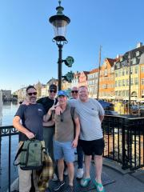
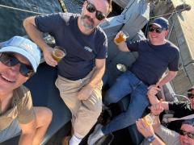
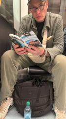
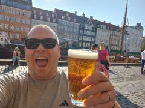
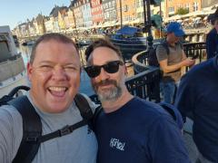
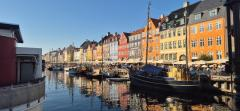
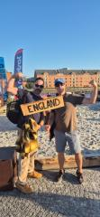
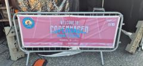

Fjord Eyes Only
Prologue. Jimbo Tours.
A concept born in the casualty of youth, created in a world of control and routine it is designed to allow all that have the honour of being invited the purest sense of escapism, an exit from the stress and order of everyday life. You don’t know where you are going, who you are going with and what will happen when you get there. An exercise focussed on the purity of letting go and the wonderful things that can happen when you do.
Day 1 - Fjord eyes only.
For me it is a return after a fallow year, living in Cornwall adds a level of complexity but the draw of a JT is too hard to ignore, akin to the power of the moons draw on moths and a dirty floor to a buttered side of toast. So with the logistics out of the way I spend an evening with founder James O’Donnell before an early morning jaunt across the capital and out to Gatwick where I found out where we are going and who else will be joining us.
From the moment we wake there is an aura, a presence around the trip, every connection is timed to perfection, an upgrade to include extra legroom, small things that on their own are inconsequential but by building on top of each other deliver an energy that projects outwards and we know from experience that this excitable energy always delivers.
A call comes through just after I’ve cleared security it’s Patrick Allen our first companion has arrived, but so freeing is the JT philosophy that he is standing at security with no idea where he is going and no boarding pass to get there. JD sends a QR code with no destination information, we are through security, it is time to decipher the departure board, we cross off destinations that we know have been ticked off before, this narrows our search to a few, PA ponders and then with a sense of trepidation says “Oslo?”
Oslo it is, the aura lifts us and carries us from plane to train in fluid succession 1 minute 30 seconds between the two, but it wasn’t finished there, a short walk from the station and we find ourselves on a catamaran touring the Fjords on a picture perfect day in Oslo. A plane, train catamaran combo must be a JT first. After a drink or two sat by the side of the fjord it is time to explore the streets on the transport of choice for the city, the electric scooter. As is the case with JT you never sit still for long so we were off to find a place that would give us a warm Oslo hug, which we found the only problem was that hug was a little too warm some would say warmer than an RP beer, coupled with an early start we all started to sink slowly and deeply into the comfiest sofa in Oslo, would it be an early first day.
A local drink called fernet would give us our answer, there was more to be seen. So we wandered the streets a door down an alleyway beckoned, the coin of destiny was needed the aura was trying to tell us something and the coin confirmed, this door was not for us so onwards we walked, it wasn’t long until a small bar beckoned, we took up seats and started to settle in, it was mere moments until Maria Theresa approached us, we were expecting to be told to move or we had done something wrong, but instead we were given a music bingo sheet and a warm welcome, a short time later we had won our first quiz in a foreign language, much to our surprise, we now had a tab behind the bar and an evening of adventure ahead of us.
A few hours later we find ourselves in an underground karaoke bar with a group of locals singing our hearts out, Oslo you have been kind to us.
Day 2 - A very long walking tour
After 3 hours sleep we are up and out JD has us booked on a walking tour leaving from the central station. We arrive tired but ready to embrace the city, we follow our leader he takes a left then a right then we’re on a train, JD why are we on a train? “Oslo has been kind to us but it is time to leave” now this isn’t unusual for JT a mystery city is a familiar friend. But this felt different because on this occasion we were on a train to the airport. What is going on.
Epilogue
“That was the best day of JT I’ve had so far. “ Patrick Allen 20 September 2024
Photographs
{kind=link}

{kind=link}
{kind=link}

{kind=link}

{kind=link}

{kind=link}

{kind=link}

{kind=link}

{kind=link}
